측량및지형공간정보기사 (2014-09-20 기출문제)
1과목: 측지학 및 위성측위시스템
1. 탄성파 측량에 대한 설명으로 틀린 것은?
- 탄성파 측량은 굴절법과 반사법이 있다.
- 탄성파의 전파속도 관측으로 지반탐사가 있다.
- 탄성파에는 전자기파와 내면파 2종류가 있다.
- 탄성파는 탄성체에 충격으로 급격한 변형을 주었을 때 생기는 파이다.
(정답률: 71%)

2. 다음 중 이론적으로 중력과 만류인력이 같은 지점은?
- 적도
- 북위 45°
- 북위 60°
- 북극
(정답률: 64%)
3. 위성 측량에서 위성의 케플러 요소는 몇 가지가 있는가?
- 3
- 4
- 5
- 6
(정답률: 72%)
4. 다음 중 반송파(carrier)의 모호정수(ambiguilty)가 포함되어 있지 않는 관측치는?
- 일중위상차
- 이중위상차
- 삼중위상차
- 무차분 위상
(정답률: 80%)
5. 지구자기의 변화에 해당되지 않는 것은?
- 일년변화
- 부게이상
- 영년변화
- 자기폭풍
(정답률: 82%)
6. GNSS를 이용한 위치결정과 관련이 없는 것은?
- 후방교회법
- 최소제곱법
- 교각법
- 차분법
(정답률: 56%)
7. 우리나라 평면직각 좌표계에 대한 설명 중 틀린 것은?
- 우리나라에서는 서부, 중부, 동부 3개의 투영구역으로 구분하여 사용하고 있다.
- 우리나라는 횡원통 투영법(TM)을 사용한다.
- 우리나라의 평면직각좌표계에서는 원점은 축척계수가 1이다.
- 우리나라 평면직각좌표계에서는 좌표계 원점(0,0)의 횡좌표에 200,000m, 600,000를 가산한 좌표를 사용한다.
(정답률: 77%)
8. GNSS(Global Navigation Satellite System)측량의 오차에 관한 설명 중 틀린 것은?
- 전리층 통과시 전파 굴절오차는 기온, 기압, 습도 등의 기상 측정에 의해 보정될 수 있다.
- 기선해석에서 기지점의 좌표 정확도는 미지점의 위치정확도에 영향을 미친다.
- 일중차의 해석 처리만으로는 GNSS 위성과 GNSS 수신기 모두의 시계오차가 소거되지 않는다.
- 동일 기종의 GNSS 안테나는 동일방향을 향하도록 설치함으로써 안테나 위상중심 변동에 의한 영향을 줄일 수 있다.
(정답률: 48%)
9. 측량의 분류 중 측량 구역이 상대적으로 협소하고 필요로 하는 정밀도에 따라 지구의 곡률을 고려하지 않아도 되는 측량을 무슨 측량이라고 하는가?
- 삼각측량
- 측지측량
- 천문측량
- 평면측량
(정답률: 78%)
10. GNSS 단독측위의 정확도에 영향을 미치는 요소가 아닌 것은?
- 위성 궤도정보의 정확성
- 관리하는 위성배치
- 전리층, 대류권 영향
- 위성의 의사 잡음 부호
(정답률: 72%)
11. GPS의 신호가 단절될 때 연속적인 위치 및 자세 결정을 위하여 GPS와 결합하여 활용하는 시스템은?
- 전자파거리측량기(EDM)
- 관성항법장치(INS)
- 속도계
- 나침반
(정답률: 77%)
12. 반지름 1.5m인 구면상의 구면삼각형 면적이 0.349m2 때 구면삼각형의 구과량은?
- 6° 43′ 14″
- 7° 53′ 14″
- 8° 53′ 14″
- 9° 43′ 14″
(정답률: 65%)
13. 동일 자오선 상에 있는 A점과 B점에서 천구 북극의 고도가 각각 α=30° , β=27° 로 측정되었을 때 AB간의 구상 거리가 334km라 하며 지구 반지름은? (단, 지구를 구로 가정한다.)
- 약 6330km
- 약 6359km
- 약 6360km
- 약 6379km
(정답률: 58%)
14. 지구상의 한 점에서 기준타원체에 내린 수직선이 적도면과 이루는 각은?
- 측지위도
- 천문위도
- 천문경도
- 지심위도
(정답률: 57%)
15. VRS(virtual reference station)에 대한 설명으로 틀린 것은?
- 코드데이터 기반으로 측량을 수행한다.
- 중앙국과의 무선토인이 가능해야 한다.
- 중앙국에서 계산된 오차를 이용하여 위치를 결정하는 기법이다.
- 실시간 측위가 가능하다.
(정답률: 65%)
16. UTM 좌표계에 대한 설명으로 옳은 것은?
- 각 구역은 서쪽방향으로 10° 간격으로 1부터 번호를 붙인다.
- 지구 전체를 경도 6°씩 60구역으로 나눈다.
- 위도는 남, 북위 60° 까지만 포함한다.
- 위도 80° 이상의 양극지역의 좌표도 포함된다.
(정답률: 66%)
17. 중력이상의 주된 원인은?
- 태양과 달에 의한 인력
- 지하물질의 밀도 불균일
- 화산폭발
- 지구의 자전운동
(정답률: 71%)
18. 지구의 자전축이 황도면의 수직방향에 대하여 23.5° 기울기를 가지고 약 26000년을 주기로 회전하는 현상은?
- 장동(nutation)
- 세차(precession)
- 균시차(equation of time)
- 일주운동(diurnal motion)
(정답률: 72%)
19. GNSS에서 위성과 수신기 사이의 의사거리를 구하기 위하여 관측하는 것은?
- 신호의 전달시간
- 신호의 형태
- 신호의 세기
- 신호대 잡음비
(정답률: 80%)
20. GNSS 측량시 3차원 위치결정을 위해 필요로 하는 최소 위성의 수는?
- 4대
- 5대
- 6대
- 7대
(정답률: 77%)
2과목: 응용측량
21. 곡선반지름 R=100m 되는 원곡선을 속도 100km/h로 주행할 때는 캔트(cant)는? (단, 궤간은 1.067m 이다.)
- 약 110mm
- 약 740mm
- 약 840mm
- 약 940mm
(정답률: 58%)
22. 하천의 양수표 설치장소로 적당하지 않은 곳은?
- 하상과 하안이 안전하고 세굴과 퇴적이 생기지 않은 곳
- 상하류 약 100m 정도가 직선인 곳
- 지천과 합류하는 곳
- 수위가 교각 및 그 밖의 구조물로 인하여 영향을 받지 않는 곳
(정답률: 67%)
23. 주로 고속도로의 완화곡선으로 주로 사용하는 것은?
- 단곡선
- 3차원표물선
- 렘니스케이트 곡선
- 클로소이드 곡선
(정답률: 67%)
24. 토지구획정리측량에 관한 설명으로 옳지 않은 것은?
- 환경정비개선, 교통안전 확보, 재해발생방지 등 시가지 조성을 위해 실시된다.
- 토지의 형상, 면적 파악 등의 정확한 측량이 요구된다.
- 토지구획정리는 지역의 사회적, 자연적 조건을 고려하여야 한다.
- 구획정리는 다른 공사의 시공과 달리 측량기술자에 의해 쉽게 설계변경을 할 수 있다.
(정답률: 70%)
25. 노선측량에서 그림과 같은 단곡선에서 곡선반지름 R=100m, 교각 I =60°라면 옳지 않은 것은?
- 장현(L)=120m
- 외할(E)=15.5m
- 중앙증거(M)=13.4m
- 접선장(T.L)=57.7m
(정답률: 64%)
26. 수로조사에서 간출지의 높이와 수심의 기준이 되는 해수면은?
- 평균해면
- 평균저조면
- 약최고고조면
- 약최저저조면
(정답률: 32%)
27. 삼각점을 이용하여 터널 입구 A와 B의 좌표값에 대한 결과가 표와 같다. 측선AB의 거리와 방위각은?
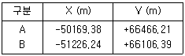
- 거리 : 1116.43m, 방위각 : 18° 48′ 06″
- 거리 : 1116.43m, 방위각 : 198° 48′ 06″
- 거리 : 380.55m, 방위각 : 18° 48′ 06″
- 거리 : 380.55m, 방위각 : 198° 48′ 06″
(정답률: 51%)
28. 다음 중 터널측량 작업순서로 옳은 것은?
- 예측 → 지표설치 → 답사 → 지하설치
- 답사 → 예측 → 지표설치 → 지하설치
- 예측 → 답사 → 지하설치 → 지표설치
- 답사 → 지표설치 → 예측 → 지하설치
(정답률: 61%)
29. 100m2의 정사각형 면적을 0.1m2까지 정확하게 구하기 위하여 필요충분한 한 변의 측정거리 단위는?
- 15mm
- 10mm
- 5mm
- 3mm
(정답률: 45%)
30. 직사각형의 토지를 종, 횡으로 측정하여 65.45m, 58.55m를 얻었다. 길이의 측정값을 각각 ±1cm의 표준오차로 유지할 때 면적의 표준오차는?
- ±0.77m2
- ±0.88m2
- ±1.50m2
- ±1.76m2
(정답률: 46%)
31. 어떤 하천에서 BC를 따라 심천 측량을 실시할 때 B점으로부터 BC에서 직각으로 AB=96m의 기선을 잡았다. 배가 P점 위에서 ∠APB를 측정한 값이 43° 30′이었다면 BP의 거리가 100m가 되기 위하여 P점으로부터 배가 이동해야할 방향과 거리는?
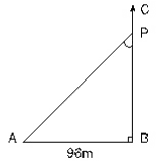
- B방향으로 8.90m
- C방향으로 8.90m
- B방향으로 1.16m
- C방향으로 1.16m
(정답률: 54%)
32. 그림과 같은 직사각형 지역에 지반고 13m인 평탄한 택지를 조성하기 위하여 필요한 토공량은? (단, 지반고의 단위는 m이다.)
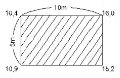
- 절토, 6.25m
- 성토, 6.25m3
- 절토, 12.5m3
- 성토, 12.5m3
(정답률: 50%)
33. 지상 및 지하시설물 등에 대한 지도 및 도면 등 제반 정보를 수치입력하여 효율적으로 운영 관리하는 종합적인 관리체계를 무엇이라 하는가?
- SIS(Surveying Information System)
- CAD(Computer Aided Design)
- AM(Automated Mapping)
- FM(Facilities Management)
(정답률: 64%)
34. 교각 1=90°, 곡선반지름 R=100m인 단곡선의 교점 I.P의 추가거리가 1139.25m일 때, 곡선의 시점 B.C의 추가거리는?
- 989.25m
- 1023.18m
- 1039.25m
- 1245.32m
(정답률: 54%)
35. 곡선 반지름 R=100m, 곡선 길이 L=25m 일 때 글로소이드의 파라미터 A는?
- 80m
- 60m
- 50m
- 40m
(정답률: 55%)
36. 전자면적측정기로 도상에서 200m2로 측정된 도면이 측량 당시보다 가로, 세로 각각 0.5프로씩 줄어든 것이었다면 면적 오차는?
- 약 2m2
- 약 1m2
- 약 0.2m2
- 약 0.0⑤m2
(정답률: 31%)
37. 중곡선이 상향기울기 m=2.5/1000, 하향기울기 n=-40/1000일 때 곡선반지름이 2000m이면 곡선장(L)은?
- 85m
- 45.2m
- 42.5m
- 35.2m
(정답률: 44%)
38. 터널의 변형조사 측량과 거리가 먼 것은?
- 중심측량
- 삼각측량
- 고저측량
- 단면측량
(정답률: 52%)
39. 하천측량에서 유제부에 대한 평면측량의 범위는?
- 제외지 전부와 제내지 200m 이내
- 제내지 전부와 제외지 200m 이내
- 제외지 전부와 제내지 300m 이내
- 제내지 전부와 제외지 300m 이내
(정답률: 18%)
40. 하천의 평균유속을 구하기 위하여 수심 H인 수면으로부터 0.2H, 0.4H, 0.8H 되는 곳의 유속을 측정하였더니, 각각 0.85m/s, 0.72m/s, 0.66m/s, 0.51m/s이었다. 이때 3점법에 의하여 산출한 평균유속은?(오류 신고가 접수된 문제입니다. 반드시 정답과 해설을 확인하시기 바랍니다.)
- 0.63m/s
- 0.67m/s
- 0.69m/s
- 0.70m/s
(정답률: 58%)
3과목: 사진측량 및 원격탐사
41. 항공사진측량에서의 항공사진의 축척에 대한 설명 중 옳은 것은?
- 항공사진 카메라의 초점거리에 반비례하고, 촬영고도에 반비례한다.
- 항공사진 카메라의 초점거리에 반비례하고, 촬영고도에 비례한다.
- 항공사진 카메라의 초점거리에 비례하고, 촬영고도에 비례한다.
- 항공사진 카메라의 초점거리에 비례하고, 촬영고도에 반비례한다.
(정답률: 42%)
42. 도화기로 등고선을 그릴 때 등고선의 높이 오차를 3m 이내로 하려면 측정하는 시차치의 오차는 최대 몇 mm이내여야 하는가? (단, 사진축척 = 1:35000, 초점거리 = 150mm, 사진크기 = 23cm × 23cm, 사진의 중복도 = 60프로)
- 0.01mm
- 0.⑤mm
- 0.1mm
- 0.5mm
(정답률: 39%)
43. 사진 크기와 촬영고도가 같고, A카메라는 초점거리 88mm, B카메라는 152mm일 때, A카메라에 의한 촬영면적은 B카메라의 약 몇 배인가?
- 1.3배
- 1.8배
- 2배
- 3배
(정답률: 43%)
44. 수치고도모형 (Digital Elevation Model)의 생성방법이 아닌 것은?
- 단일 고해상도 위성영상을 좌표변환하여 생성한다.
- 항공라이다에서 취득한 3차원 좌표를 격자화하여 생성한다.
- 위성 SAR 영상에 Radar Interferometry기법을 적용하여 생성한다.
- 중복항공영상에 영상정합을 통해 생성한 3차원 좌표를 격자화하여 생성한다.
(정답률: 44%)
45. 과고감에 대한 설명으로 틀린 것은?
- 입체시할 때 평면축적보다 수직축척이 크게 나타나는 현상이다.
- 입체시할 때 눈의 위치가 약간 높아 지면 과고감이 더 커진다.
- 과고감은 동일 촬영조건시 종중북도에 비례한다.
- 과고감은 기선고도에 비례한다.
(정답률: 45%)
46. 초점거리 150mm, 사진크기 23cm × 23cm인 카메라를 이용하여 해발 2800m의 고도에서 평균고도 해발 100m인 지역을 촬영하였다. 촬영경로의 수가 4이고, 촬영경로당 9매의 사진이 촬영되었으며 종중북도 70%, 횡중북도 35%이었다면 1모델의 유효면적을 기준으로 계산한 전체 유효면적은?(오류 신고가 접수된 문제입니다. 반드시 정답과 해설을 확인하시기 바랍니다.)
- 94km2
- 107km2
- 120km2
- 134km
(정답률: 29%)
47. 물체는 자신에게 도달한 전자파 에너지를 반사, 흡수, 전도하며 자체 내부온도에 의한 전자파를 복사(방사)한다. 이 중 수동적 센서가 수집하는 전자파에너지로 옳은 것은?
- 반사 또는 전도에너지
- 반사 또는 복사에너지
- 흡수 또는 전도에너지
- 흡수 또는 복사에너지
(정답률: 52%)
48. 촬영시 사진의 기하학적 상태를 재현하기 위하여 표정을 하는데 이 과정에 대한 설명으로 옳지 않은 것은?
- 내부표정은 사진의 주점과 초점거리를 조정하는 작업이다.
- 상호표정은 입체모델의 종시차를 소거시키는 작업이다.
- 절대표정은 축적과 경사, 위치 증을 바로잡는 과정이다
- 접합표정은 한 개, 한 개의 사진만을 접합하는 작업이다.
(정답률: 55%)
49. 항공사진의 특수 3점으로만 짝지어진 것은?
- 주점, 연직점, 등각점
- 주점, 중심점, 등각점
- 표정점, 연직점, 등각점
- 주점, 표정점, 연직점
(정답률: 66%)
50. 초점거리 15cm, 사진크기 23cm × 23cm인 카메라로 표고정의 높이 오차가 등고선 간격의 1/2이 되도록 하기 위한 촬영고도는? (단, 종중복도(overlap) 60%, 등고선 간격 2m, 시차측정오차는 ±20µm로 한다.)
- 약 1350m
- 약 1430m
- 약 2300m
- 약 1610m
(정답률: 45%)
51. 초점거리 15cm, 사진크기 23cm × 23cm인 사진기로 항공사진측량을 할 때, 촬영기준면 (표고0m)으로보터 고도 3000m인 곳에 대한 종중복(over lap)이 60%일 때, 표고 200m인 평탄지에 대한 종중복은?
- 54%
- 57%
- 60%
- 63%
(정답률: 37%)
52. 해석적 내부표정에서 Affine 변환식으로 보정할 수 없는 현상은?
- 좌표 축이 회전된 경우
- X축과 Y축의 축척이 서로 다른 경우
- 좌표 원점이 평행 이동된 경우
- 곡면을 평면으로 보정할 경우
(정답률: 39%)
53. 절대표정을 위한 기준점의 개수와 배치로 가장 적합하지 않은 것은? (단, O는 수직기준점 (Z), □는 수평기준점(X.Y), △는 3차원기준점 (X, Y, Z)를 의미하며 대상지역은 거의 평면에 가깝다고 가정한다.)
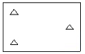
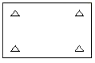
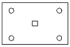
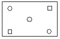
(정답률: 55%)
54. 원격탐사의 정보처리 흐름으로 옳은 것은?
- 자료수집 – 자료변환 – 방사보정 – 기하보정 – 판독응용 - 자료보관
- 자료수집 – 방사보정 – 기하보정 – 자료변환 – 판독응용 – 자료보관
- 자료수집 – 자료변환 – 판독응용 – 기하보정 – 방사보정 – 자료보관
- 자료수집 – 방사보정 – 자료변환 – 기하보정 – 판독응용 – 자료보관
(정답률: 57%)
55. 지상수산소에서 사용자에게 공급하는 위성영상자료의 포맷이 아닌 것은?
- BIL(Band Interleaved by Line)
- BSQ(Band SeQuential)
- HDF(Hierarchical DAta Format)
- SIF(Standard Interchange Format)
(정답률: 36%)
56. 횡접합정에 대한 설명으로 옳은 것은?
- 인접 스트립을 연결하기 위한 점이다.
- 지상측량을 실시하여 좌표를 구한다.
- 대공표지를 실시하여야 한다.
- 상호표정에 사용된다
(정답률: 37%)
57. 항공사진측량에서 스트립(Strip)에 관한 설명으로 틀린 것은?
- 촬영진행 방향으로 연속된 모델이다.
- 비행경로와도 같은 의미로 쓰인다.
- 한 쌍의 중복된 사진을 의미한다.
- 스트립이 횡방향으로 결합된 것을 블록이라 한다.
(정답률: 47%)
58. 다음 중 사진측량의 특징으로 옳지 않은 것은?
- 정밀도가 균일하다.
- 4차원 측량이 가능하다.
- 근접하기 어려운 대상물을 측정하기 용이하다.
- 일괄적인 연속작업으로 처리되므로 분업화가 어렵다
(정답률: 54%)
59. 수동적 센서(Passive Sensor) 중 지표로부터 반사되는 전자기파를 렌즈와 반사경으로 집광하여 필터를 통해 분광한 다음 파장별로 구분하여 각각의 영상을 기록하는 감지기는?
- HRV
- Lager
- MSS
- SLA
(정답률: 58%)
60. 원격탐사의 자료변환 시스템에 있어서 기하학적인 오차나 왜곡의 원인이 아닌 것은?
- 센서의 기하학적 특성에 기인한 오차
- 인공위성의 크기에 기인한 오차
- 플랫폼의 자세에 기인한 오차
- 지표의 기복에 기인한 오차
(정답률: 53%)
4과목: 지리정보시스템
61. 지리정보자료의 정확도 향상을 위한 방법으로 옳지 않은 것은?
- 신뢰도가 높은 자료와 낮은 자료의 혼합 사용
- 정확도 검증과정의 채택
- 품질관리 규정의 마련 및 준수
- 속성정보 수집의 객관성 확보
(정답률: 60%)
62. 지형도, 항공사진을 이용하여 대상자의 3차원 좌표를 취득하여 불규칙한 지형을 기하학적으로 재현하고 수치적으로 해석하므로 경관해석, 노선선정, 택지조성 환경설계 등에 이용되는 것은?
- 원격탐사
- 도시정보체계
- 정사사진
- 수치지형모델
(정답률: 56%)
63. 보기의 ( )에 들어갈 용어로 적합한 것은?
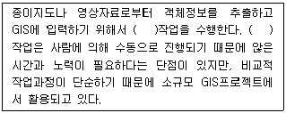
- 스캐닝(scanning)
- 디지타이징(digitizing)
- 원격탐사 (remote sensing)
- GPS ( global positioning system)
(정답률: 64%)
64. 지리정보를 효율적으로 관리하기 위한 도구로써 DBMS의 장점이라고 하기 어려운 것은?
- 중앙제어기능
- 효율적인 자료호환
- 다양한 양식의 자료제공
- 시스템의 단순성
(정답률: 57%)
65. A집에 2명, B집에 1명, C집에 3명, D집에 4명 등 A, B, C, D 4개의 집에 총 10명의 사람이 살고 있다. 10명 전체가 모일 경우 사람들의 걸음을 최소로 할 수 있는 지점 E의 좌표는?
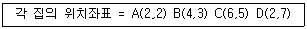
- (1.4, 1.7)
- (1.4, 5.0)
- (3.4, 1.7)
- (3.4, 5.0)
(정답률: 45%)
66. 다음과 같은 데이터에 대한 위상구조 테이블로 적합한 것은?
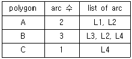
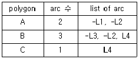
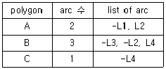
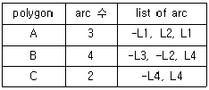
(정답률: 42%)
67. 공간분석용 데이터 중 네트워크 데이터와 가장 거리가 먼 것은?
- 도로망도
- 도시계획도
- 상.하수도
- 항공노선도
(정답률: 52%)
68. 공간자료의 일반화 (generalization)에 대한 설명으로 옳지 않은 것은?
- 넓은 지역의 자료를 작은 단위 면적으로 나뉘어 관리하는 것을 말한다.
- 지도의 일반화는 대축척에서 소축척으로의 일반화만 가능하다.
- 백터기반의 일반화에서는 단순화, 집단화, 재배치 등이 이루어 진다.
- 지도의 일반화 적용에 있어서 일관성과 정확도 유지등을 고려하여야 한다.
(정답률: 30%)
69. 공간적 접근성을 정의할 때 이용되며 공간형상의 둘레에 특정한 폭을 가진 zone을 구축하는 것을 무엇이라 하는가?
- 버퍼링
- 공간중첩
- 클리핑
- 디졸브
(정답률: 55%)
70. 부울(Boolean)논리를 적용한 레이어의 중첩에서 그림의 빗금친 부분과 같은 논리연산을 바르게 나타낸 것은?
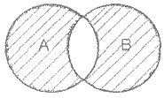
- A AND B
- A OR B
- A NOT B
- A XOR B
(정답률: 55%)
71. 지리정보자료의 내용, 품질, 조건, 기타 다양한 특징들을 설명하는 자료에 관한 배경정보를 무엇이라 하는가?
- 메타데이터
- 데이터생산사양
- 데이터모델
- 위상구조
(정답률: 57%)
72. 상하수도, 가스관로 등과 같은 시설물관리시스템의 네트워크 분석에 있어서 가장 중요한 위상정보는?
- 공간객체 간의 형상 (shape)
- 공간객체 간의 연결성 (connectivity)
- 공간객체 간의 계급성
- 공간객체 간의 인접성
(정답률: 52%)
73. OCG에서 정의한 GIS 웹서비스 표준 중 아래에서 설명하고 있는 서비스 표준의 명칭은?
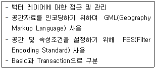
- WCS(Web Coverage Service)
- WRS(Web Raster Service)
- WFS(Web Feature Service)
- WMS(Web Map Service)
(정답률: 36%)
74. 벡터자료처리 중에서 발생되며 두 입력지도의 경계가 불일치 할 때 경계부근에서 주로 생성되는 의미없는 작은 polygon을 무엇이라 하는가?
- sliver polygon
- small polygon
- section polygon
- error polygon
(정답률: 58%)
75. 공공시설물이나 대규모의 공장, 관로망 등에 대한 지도 및 도면 등 제반정보를 수치 입력하여 시설물에 대한 효율적인 윤영관리를 하는 종합적인 관리체게를 무엇이라 하는가?
- CAD/CAM
- A.M(Automated Mapping)System
- F.M(Facility Management)System
- S.I.S(Surveying Information System)
(정답률: 60%)
76. 벡터방식과 비교할 때 래스터(격자)방식의 특징에 대한 설명으로 옳지 않은 것은?
- 자료의 구조가 단순하다.
- 레이어의 중첩이나 분석이 용이하다.
- 속성정보의 추출 및 갱신이 용이하다.
- 그래픽의 정확도가 낮다
(정답률: 39%)
77. 조직 내 많은 부서가 공동으로 필요로 하는 다양한 지리정보를 손쉽게 취급할수 있도록 클라이언트-서버기술을 바탕으로 시스템을 통합시키는 GIS환경은?
- Component GIS
- Enterprise GIS
- Internet GIS
- Professional GIS
(정답률: 66%)
78. 지리정보시스템의(GIS)의 일반적인 구성요소가 아닌 것은?
- 컴퓨터 하드웨어
- 컴퓨터 소프트웨어
- 모바일 네트워크
- 공간 데이터베이스
(정답률: 66%)
79. 다음중 벡터구조방식의 수치표고자료 모형은?
- grid DEM
- DTED
- grid DSM
- TIN
(정답률: 57%)
80. 지형공간정보체계에 대한 설명중 틀린 것은?
- 인간의 의사결정능력의 지원에 필요한 지리정보의 관측과 수집에서부터 보존과 분석,출력에 이르기까지 일련의 조작을 위한 정보시스템이다.
- 격자방식을 통해 벡터방식에 비해 정확한 경계선 추출이 가능하다.
- 지리정보는 GIS에서 대상으로 하는 모든 정보를 의미한다.
- 지리정보의 대표적인 항목은 지리적 위치, 관련 속성정보, 공간적 관계, 시간이다.
(정답률: 52%)
5과목: 측량학
81. 교호수준측량을 실시하여 그림고 같은 결과를 얻었다면 B점의 표고는? (단, 단위는 m이다.)
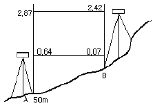
- 50.45m
- 50.51m
- 50.57m
- 50.58m
(정답률: 55%)
82. 트래버스에서 수평각 관측에 관한 설명으로 옳지 않은 것은?
- 폐합트래버스의 편각의 합은 180° (n-2)이다.
- 교각이란 어느 고나측선이 그 앞에 관측선과 이루는 각을 말한다.
- 편각이란 해당측선이 앞 측선의 연장선과 이루는 각을 말한다.
- 교각법은 한 각의 잘못을 발견하였을 경우에 다른 각을 재관측할 수 있다.
(정답률: 44%)
83. 다음 중 마라톤 코스와 같은 표면 거리를 측정하기에 가장 적합한 기기는?
- 유리섬유테이프
- 중량이 작은 강철자
- 초장기선 간섭계(VLBI)
- 기선에서 검정된 자전거
(정답률: 50%)
84. 다음 중 3차원 위치성과를 획득 할 수 없는 측량장비는?
- 토탈스테이션
- 레벨
- LiDAR
- GPS
(정답률: 65%)
85. 1:25000 지형도상에서 표고가 480m, 210m인 2점 사이에 케이블카를 설치하고자 한다. 도상의 2점간 거리가 4cm이었다. 처짐을 고려하지 않는다면 케이블의 길이는?
- 0.963km
- 1.036km
- 1.723km
- 2.026km
(정답률: 54%)
86. 30m줄자를 사용하여 2점간의 거리를 관측한 결과가 270m 이었다. 30m에 대한 우연오차가 ±2mm라면 2점간의 거리에 대한 우연오차는?
- ±18″
- ±15″
- ±9″
- ±6″
(정답률: 36%)
87. 삼각망의 내각을 같은 정밀도로 측량하여 변의 길이를 계산할 경우 각도의 오차가 변의 길이에 미치는 영향이 최소인 것은?
- 정삼각형
- 지각삼각형
- 예각삼각형
- 둔각삼각형
(정답률: 64%)
88. 수준측량에서 5m 표척 상단이 후방으로 30cm 기울어져 있다. 표척의 읽음값이 4m 이었다면 이 관측값에 대한 오차는?
- 약 0.7cm
- 약 1.5cm
- 약 3.0cm
- 약 6.0cm
(정답률: 25%)
89. 축척 1:10000의 지형도에서 1/22 기울기로 올라가는 도로를 건설하려고 할 때 등고선(주곡선)간의 수평거리는?
- 22m
- 100m
- 110m
- 220m
(정답률: 40%)
90. 그림과 같은 삼각점의 선점도에서 신점(구점)을 ○, 여점(기지점)을 ◎라 하면, 신점의 위치는 3~4개의 여점에서 평균계산(조정)을 행한다. 평균계산의 방향이 화살표와 같을 때 가장 마지막으로 계산(조정)되는 점은?
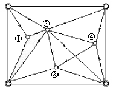
- ①
- ②
- ③
- ④
(정답률: 58%)
91. 등고선의 종류와 지형도의 축척에 따른 등고선의 간격에 대한 설명으로 틀린 것은?
- 주곡선은 지형표시의 기본이 되는 곡선으로 가는 실선을 사용한다.
- 등고선의 간격은 측량의 목적 및 지역의 넓이, 작업에 과련한 경제성, 토지의 현황, 도면의 축척, 도면의 읽기 쉬운 정도 등을 고려하여 결정한다.
- 계곡선은 등고선의 수 및 표고를 쉽게 읽도록 주곡선 5개마다 굵게 표시한 곡선으로 굵은 실서을 사용하며 축척 1:50000 지형도의 경우에는 간격이 50m이다.
- 간곡선은 주곡선의 1/2 간격으로 삽입한 곡선으로 가는 차선으로 나타내며 축척 1:25000 지형도에서는 5m 간격이다.
(정답률: 44%)
92. 도심지에서 20개의 측점을 트래버스 측량한 결과 각오차가 50″ 발생했다. 이 오차의 처리로 옳은 것은? (단, 도심지의 각 측량 허용오차는 이며, 각 측량의 정확도는 일정하다.)
- 관측 각의 크기에 반비례하여 분배한다.
- 측선의 길이에 비례하여 분배한다.
- 등분배한다.
- 재측한다.
(정답률: 49%)
93. 표준줄자와 비교하여 7.5mm가 긴 30m 줄자로 경사면을 관측한 결과 150m 이었다. 두점간의 실제 거리에 대한 경사보정량이 1cm라면 고저차는?
- 1.73m
- 1.84m
- 2.01m
- 2.65m
(정답률: 31%)
94. 북쪽 X축으로 하는 좌표계에서 P1 과 P2의 좌표가 x1 = -11328.58m, y1 = -4891.49m, x2 = -11616.10m, y2 = -5240.83m일 때
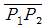
의 평면거리 S 와 방향각 T는?- S = 549.73m, T = 129° 27′ 21″
- S = 452.44m, T = 50° 32′ 40″
- S = 549.73m, T = 309° 27′ 21″
- S = 452.44m, T = 230° 32′ 40″
(정답률: 34%)
95. 우리나라 측량의 기준으로써 위치 측정의 기준인 세계측지계에 대한 설명으로 옳지 않은 것은?
- 지구를 편평한 회전타원체로 상정하여 실시하는 위치측정의 기준이다.
- 극지방이 지오이드가 회전타원체 면과 일치하여야 한다.
- 회전타원체이 단축이 지구의 자전축과 일치하여야 한다.
- 회전타원체의 중심이 지구의 질량 중심과 일치하여야 한다.
(정답률: 44%)
96. 기본측량의 실시공고는 해당 특별시·광역시·도 또는 특별자치도 또는 특별자치도의 게시판 및 인터넷 홈페이지에 며칠 이상 게시하여야 하는가?
- 30일
- 21일
- 14일
- 7일
(정답률: 52%)
97. 일반측량성과 및 일반측량기록 사본의 제출을 요구할 수 있는 경우에 해당되지 않는 것은?
- 측량의 기술 개발을 위하여
- 측량의 정확도 확보를 위하여
- 측량의 중복 배제를 위하여
- 측량에 관한 자료의 수집·분석을 위하여
(정답률: 49%)
98. 다음 중 측량업 등록의 결격사유에 해당되지 않는 것은?
- 금치산자 또는 한정치산자
- 국가보안법 위반으로 금고 이상의 실형 선고자
- 측량업의 등록이 취손 된 후 3년이 지난 자
- 측량업의 등록이 취소된 후 1년이 지난 임원을 둔 법인
(정답률: 36%)
99. 측량·수로조사 및 지적에 관한 법률에서의 용어 정의 중, “수로도지(水路圖誌)”에 해당하는 도면이 아닌 것은?
- 해양재해를 줄이기 위한 해안침수 예상도
- 연안정보를 수록한 해안수치도
- 해저지형과 해저지질의 특성을 나타낸 해저지형도
- 해양영토 관리, 해양경계 확정 등에 필요한 정보를 수록한 영해기점도
(정답률: 32%)
100. 측량·수로조사 및 지적에 관한 법률에서 규정하는 수치주제도에 속하지 않는 것은?
- 지하시설물도
- 행정구역도
- 수치지적도
- 토지피복도
(정답률: 36%)